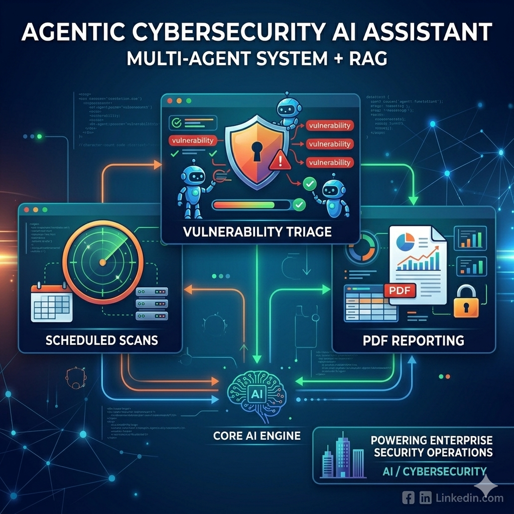

Agentic Cybersecurity AI Assistant
Enterprise-grade multi-agent RAG system that automates vulnerability analysis, security tool orchestration and reporting.

Overview
An enterprise-grade AI cybersecurity assistant built with LangChain and LangGraph, combining multi-agent orchestration, Retrieval-Augmented Generation (RAG), vector search, external security tools, and automated reporting to support vulnerability analysis and continuous monitoring.
Purpose — Why This Project Exists
Security teams drown in vulnerability scan output — triaging it manually is slow and inconsistent across analysts. This assistant exists to turn raw scan data into context-grounded, reasoned analysis automatically: specialized agents plan, retrieve relevant vulnerability knowledge, and generate reports, so human analysts spend their time on judgment calls instead of manual lookup.
Animated Workflow
Key Features
Benefits
Automates the first pass of vulnerability analysis, not just detection.
Every conclusion is backed by retrieved vulnerability knowledge, not guesswork.
Graceful fallback logic keeps workflows running through tool failures.
Built to run as an ongoing watch, not a one-off scan report.